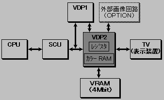

★HARDWARE Manual
★VDP2ユーザーズマニュアル
★HARDWARE Manual
★VDP2ユーザーズマニュアル
■ ｜
進む▼
VDP2ユーザーズマニュアル
第１章 VDP2の機能
- VDP2には、スクロール機能とプライオリティ機能があります。
スクロール機能はスクロール画面を定義し、画面を上下左右に移動、あるいは回転移動させる機能です。プライオリティ機能は、複数のスクロール画面とスプライト、外部画面の表示優先順位を決め、カラー演算やカラーオフセットなどの画像処理を行う機能です。
■1.1 システム構成
- VDP2には、4Mまたは8MビットのVRAMが接続され、32KビットのカラーRAMが内蔵されています。画像データは、CPUからSCUを介してVRAMとカラーRAMに定義されます。画像表示を制御する情報も同様にして、各レジスタに設定されます。
VRAMに定義されたデータは、レジスタの設定に従って読み出され、各スクロール画面の画像データになります。
各スクロール画面の画像データとVDP1から送られてきたスプライトの画像データ、外部から送られてきた外部画像データは、レジスタの設定に従って表示優先順位が決められ、表示画像データになります。
表示画像データがパレット形式の時には、その値に従ってカラーRAMに定義されているカラーデータを読み出し、表示カラーデータにします。表示画像データがRGB形式の時には、表示画像データをそのまま表示カラーデータにします。
こうして得られた表示カラーデータをディスプレイ装置に出力します。
VDP2のシステム構成を図1.1に示します。
図1.1 システム構成

■ ｜
進む▼
★HARDWARE Manual
★VDP2ユーザーズマニュアル
Copyright SEGA ENTERPRISES, LTD., 1997